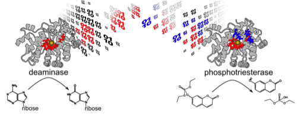

Khare Lab
Welcome to the Khare Laboratory!

We are pursuing a research program at the interface of computational and experimental biophysics, enzymology and molecular biology. We use computational protein design and directed (laboratory) evolution to understand the structural, biophysical and evolutionary bases of molecular recognition phenomena in protein function such as enzyme activity, specificity and conformational changes.
We are located on the second floor in the Center for Integrative Proteomics Research on the Busch Campus of Rutgers University.
OPENINGS
Graduate: We are always looking for energetic, and highly motivated graduate students. If your background/interests are in chemistry, biochemistry, molecular biology, experimental biophysics, or computational, physical sciences (or some combination of the above), and you like to work in an interdisciplinary environment on exciting problems, stop by at my office (208 M Proteomics) or send an email to khare at chem dot rutgers dot edu